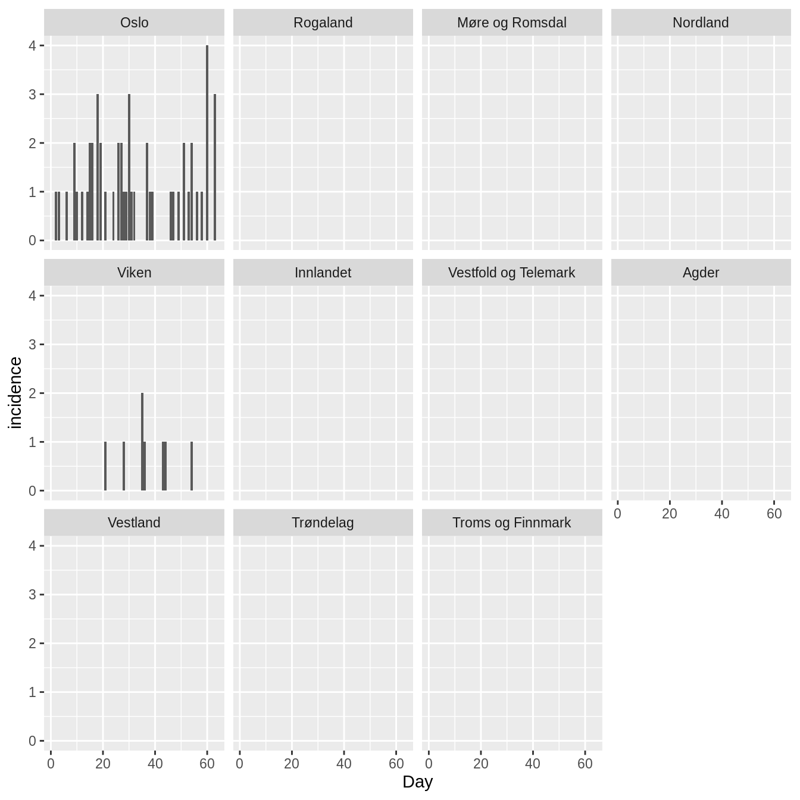
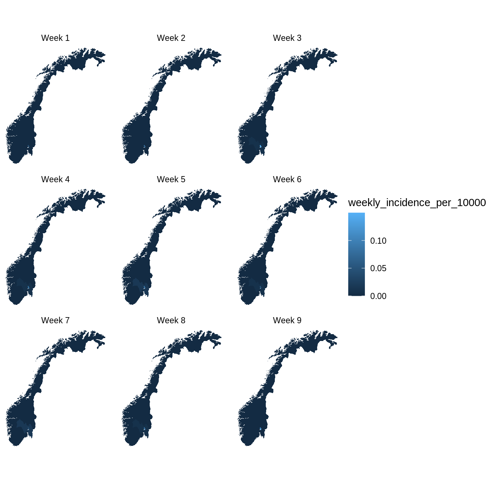

commuter_model.RmdThis model is a stochastic SEIIaR (susceptible, exposed, infectious, infectious asymptomatic, recovered) metapopulation model. Each location has a local infection system, while the locations are connected by people who commute each day. The model differentiates between day and night. During the day you can infect/be infected in the location where you work, while during the night you can infect/be infected in the location where you live. It is the same commuters who travel back and forth each day. At the start of a day, all commuters are sent to their work location, where they mix for 12 hours. The commuters are then sent to their respective home locations, where they mix for 12 hours. The model is based upon a published model.
seiiar is a dataset that contains the following variables for the entire population you want to model:
location_code a code for each locationS the starting value of susceptible peopleE the starting value of exposed peopleI the starting value of infectious and symptomatic peopleIa the starting value of infectious and asymptomatic peopleR the starting value of recovered people# no one in Norway is infected, and everyone is susceptible
spread::norway_seiiar_noinfected_2017
#> location_code S E I Ia R
#> 1: municip0101 30790 0 0 0 0
#> 2: municip0104 32407 0 0 0 0
#> 3: municip0105 55127 0 0 0 0
#> 4: municip0106 80121 0 0 0 0
#> 5: municip0111 4517 0 0 0 0
#> ---
#> 418: municip5051 5138 0 0 0 0
#> 419: municip5052 584 0 0 0 0
#> 420: municip5053 6800 0 0 0 0
#> 421: municip5054 10108 0 0 0 0
#> 422: municip5061 2026 0 0 0 0
# 10 people in Oslo are infected, and everyone is susceptible
spread::norway_seiiar_oslo_2017
#> location_code S E I Ia R
#> 1: municip0101 30790 0 0 0 0
#> 2: municip0104 32407 0 0 0 0
#> 3: municip0105 55127 0 0 0 0
#> 4: municip0106 80121 0 0 0 0
#> 5: municip0111 4517 0 0 0 0
#> ---
#> 418: municip5051 5138 0 0 0 0
#> 419: municip5052 584 0 0 0 0
#> 420: municip5053 6800 0 0 0 0
#> 421: municip5054 10108 0 0 0 0
#> 422: municip5061 2026 0 0 0 0
# no one in Norway is infected, and childhood vaccination data is used to
# estimate the number of "recovered" (i.e. non-susceptible) people for measles
spread::norway_seiiar_measles_noinfected_2017
#> location_code S E I Ia R
#> 1: municip0101 1930 0 0 0 28860
#> 2: municip0104 3236 0 0 0 29171
#> 3: municip0105 3510 0 0 0 51617
#> 4: municip0106 6983 0 0 0 73138
#> 5: municip0111 438 0 0 0 4079
#> ---
#> 418: municip5051 604 0 0 0 4534
#> 419: municip5052 44 0 0 0 540
#> 420: municip5053 333 0 0 0 6467
#> 421: municip5054 848 0 0 0 9260
#> 422: municip5061 154 0 0 0 1872
# 10 people in Oslo is infected, and childhood vaccination data is used to
# estimate the number of "recovered" (i.e. non-susceptible) people for measles
spread::norway_seiiar_measles_oslo_2017
#> location_code S E I Ia R
#> 1: municip0101 1930 0 0 0 28860
#> 2: municip0104 3236 0 0 0 29171
#> 3: municip0105 3510 0 0 0 51617
#> 4: municip0106 6983 0 0 0 73138
#> 5: municip0111 438 0 0 0 4079
#> ---
#> 418: municip5051 604 0 0 0 4534
#> 419: municip5052 44 0 0 0 540
#> 420: municip5053 333 0 0 0 6467
#> 421: municip5054 848 0 0 0 9260
#> 422: municip5061 154 0 0 0 1872
# we can take a closer look at Oslo
spread::norway_seiiar_measles_oslo_2017[location_code=="municip0301"]
#> location_code S E I Ia R
#> 1: municip0301 59765 0 10 0 606984commuters is a dataset that contains the following variables:
from location code for the location where the people liveto location code for the location where the people workn the number of people this applies to# we provide the number of municipal commuters in Norway in 2017
spread::norway_commuters_2017
#> from to n
#> 1: municip0101 municip0104 84
#> 2: municip0101 municip0105 837
#> 3: municip0101 municip0106 698
#> 4: municip0101 municip0111 32
#> 5: municip0101 municip0118 265
#> ---
#> 28919: municip5061 municip5028 1
#> 28920: municip5061 municip5029 2
#> 28921: municip5061 municip5030 1
#> 28922: municip5061 municip5035 3
#> 28923: municip5061 municip5037 1r0 is the basic reproductive number.
latent_period is the average number of days from when a person is exposed until they are infectious.
asymptomatic_prob is the probability that an infectious person is asymptomatic.
asymptomatic_relative_infectiousness is the relative infectiousness of an asymptomatic infectious person when compared to a symptomatic infectious person. This value is between 0 and 1.
days_simulation the number of days you want to simulate.
N this is the number of simulations that will be run and then the results will be averaged. This should generally be set to 1, unless you are performing model fitting.
We simulate one measles outbreak using the datasets spread::norway_seiiar_measles_oslo_2017 and spread::norway_commuters_2017:
set.seed(4)
d <- spread::commuter(
seiiar=spread::norway_seiiar_measles_oslo_2017,
commuters=spread::norway_commuters_2017,
r0=14,
latent_period = 8,
infectious_period = 5,
asymptomatic_prob=0,
asymptomatic_relative_infectiousness=0,
days_simulation=7*9,
N=1
)
#> Starting to add edges, printing every 1000 edge
#> 1000 2000 3000 4000 5000 6000 7000 8000 9000 10000 11000 12000 13000 14000 15000 16000 17000 18000 19000 20000 21000 22000 23000 24000 25000 26000 27000 28000 Found 28923 edges
#> Running 1 simulations of 63 days
#>
#>
#> Finished all simulationsInspecting the data from Oslo:
d[location_code=="municip0301"]
#> location_code week day is_6pm S E I Ia R incidence pop
#> 1: municip0301 1 1 TRUE 59765 2 9 0 606985 0 666761
#> 2: municip0301 1 2 TRUE 59762 4 7 0 606988 1 666761
#> 3: municip0301 1 3 TRUE 59761 4 5 0 606991 1 666761
#> 4: municip0301 1 4 TRUE 59760 5 4 0 606992 0 666761
#> 5: municip0301 1 5 TRUE 59760 5 2 0 606994 0 666761
#> 6: municip0301 1 6 TRUE 59759 5 2 0 606995 1 666761
#> 7: municip0301 1 7 TRUE 59757 7 2 0 606995 0 666761
#> 8: municip0301 2 8 TRUE 59756 8 2 0 606995 0 666761
#> 9: municip0301 2 9 TRUE 59756 6 4 0 606995 2 666761
#> 10: municip0301 2 10 TRUE 59755 6 4 0 606996 1 666761
#> 11: municip0301 2 11 TRUE 59755 6 3 0 606997 0 666761
#> 12: municip0301 2 12 TRUE 59755 5 3 0 606998 1 666761
#> 13: municip0301 2 13 TRUE 59753 7 3 0 606998 0 666761
#> 14: municip0301 2 14 TRUE 59753 6 4 0 606998 1 666761
#> 15: municip0301 3 15 TRUE 59753 4 6 0 606998 2 666761
#> 16: municip0301 3 16 TRUE 59750 5 8 0 606998 2 666761
#> 17: municip0301 3 17 TRUE 59747 8 7 0 606999 0 666761
#> 18: municip0301 3 18 TRUE 59747 7 6 0 607001 0 666761
#> 19: municip0301 3 19 TRUE 59746 7 6 0 607002 1 666761
#> 20: municip0301 3 20 TRUE 59746 7 5 0 607003 0 666761
#> 21: municip0301 3 21 TRUE 59745 7 5 0 607004 1 666761
#> 22: municip0301 4 22 TRUE 59745 6 3 0 607007 2 666761
#> 23: municip0301 4 23 TRUE 59744 7 2 0 607008 0 666761
#> 24: municip0301 4 24 TRUE 59744 6 3 0 607008 1 666761
#> 25: municip0301 4 25 TRUE 59743 5 5 0 607008 2 666761
#> 26: municip0301 4 26 TRUE 59741 7 4 0 607009 0 666761
#> 27: municip0301 4 27 TRUE 59737 11 4 0 607009 0 666761
#> 28: municip0301 4 28 TRUE 59734 13 5 0 607009 1 666761
#> 29: municip0301 5 29 TRUE 59733 13 6 0 607009 1 666761
#> 30: municip0301 5 30 TRUE 59732 11 7 0 607011 3 666761
#> 31: municip0301 5 31 TRUE 59731 11 7 0 607012 1 666761
#> 32: municip0301 5 32 TRUE 59730 10 9 0 607012 2 666761
#> 33: municip0301 5 33 TRUE 59728 12 7 0 607014 0 666761
#> 34: municip0301 5 34 TRUE 59724 16 7 0 607014 0 666761
#> 35: municip0301 5 35 TRUE 59723 16 8 0 607014 1 666761
#> 36: municip0301 6 36 TRUE 59721 17 7 0 607016 1 666761
#> 37: municip0301 6 37 TRUE 59720 16 8 0 607017 2 666761
#> 38: municip0301 6 38 TRUE 59720 16 7 0 607018 0 666761
#> 39: municip0301 6 39 TRUE 59715 21 7 0 607018 1 666761
#> 40: municip0301 6 40 TRUE 59712 23 6 0 607020 1 666761
#> 41: municip0301 6 41 TRUE 59710 21 10 0 607020 2 666761
#> 42: municip0301 6 42 TRUE 59709 21 7 0 607024 1 666761
#> 43: municip0301 7 43 TRUE 59709 19 8 0 607025 2 666761
#> 44: municip0301 7 44 TRUE 59706 20 9 0 607026 2 666761
#> 45: municip0301 7 45 TRUE 59705 18 10 0 607028 3 666761
#> 46: municip0301 7 46 TRUE 59704 17 11 0 607029 1 666761
#> 47: municip0301 7 47 TRUE 59699 20 12 0 607030 2 666761
#> 48: municip0301 7 48 TRUE 59697 20 11 0 607033 2 666761
#> 49: municip0301 7 49 TRUE 59694 18 13 0 607036 4 666761
#> 50: municip0301 8 50 TRUE 59692 19 10 0 607040 1 666761
#> 51: municip0301 8 51 TRUE 59690 20 10 0 607041 1 666761
#> 52: municip0301 8 52 TRUE 59689 20 11 0 607041 1 666761
#> 53: municip0301 8 53 TRUE 59687 21 12 0 607041 1 666761
#> 54: municip0301 8 54 TRUE 59685 21 11 0 607044 2 666761
#> 55: municip0301 8 55 TRUE 59678 26 11 0 607046 1 666761
#> 56: municip0301 8 56 TRUE 59676 25 8 0 607052 3 666761
#> 57: municip0301 9 57 TRUE 59675 21 12 0 607053 6 666761
#> 58: municip0301 9 58 TRUE 59672 20 14 0 607055 4 666761
#> 59: municip0301 9 59 TRUE 59668 21 14 0 607058 3 666761
#> 60: municip0301 9 60 TRUE 59666 17 19 0 607059 6 666761
#> 61: municip0301 9 61 TRUE 59661 19 18 0 607063 3 666761
#> 62: municip0301 9 62 TRUE 59655 22 18 0 607066 3 666761
#> 63: municip0301 9 63 TRUE 59652 25 12 0 607072 0 666761
#> location_code week day is_6pm S E I Ia R incidence popWe can merge in information about counties, and create county level data:
d <- merge(d,fhidata::norway_locations_current, by.x="location_code",by.y="municip_code")
county <- d[,.(
S=sum(S),
E=sum(E),
I=sum(I),
Ia=sum(Ia),
R=sum(R),
incidence=sum(incidence),
pop=sum(pop)
),
keyby=.(county_code,county_name,week,day,is_6pm)]
county[,county_name:=factor(county_name,levels=unique(fhidata::norway_locations_current[,c("county_code","county_name")]$county_name))]
county
#> county_code county_name week day is_6pm S E I Ia R
#> 1: county01 Østfold 1 1 TRUE 22188 0 0 0 270705
#> 2: county01 Østfold 1 2 TRUE 22188 0 0 0 270705
#> 3: county01 Østfold 1 3 TRUE 22188 0 0 0 270705
#> 4: county01 Østfold 1 4 TRUE 22188 0 0 0 270705
#> 5: county01 Østfold 1 5 TRUE 22188 0 0 0 270705
#> ---
#> 1130: county50 Trøndelag 9 59 TRUE 29804 0 0 0 426818
#> 1131: county50 Trøndelag 9 60 TRUE 29804 0 0 0 426818
#> 1132: county50 Trøndelag 9 61 TRUE 29804 0 0 0 426818
#> 1133: county50 Trøndelag 9 62 TRUE 29804 0 0 0 426818
#> 1134: county50 Trøndelag 9 63 TRUE 29804 0 0 0 426818
#> incidence pop
#> 1: 0 292893
#> 2: 0 292893
#> 3: 0 292893
#> 4: 0 292893
#> 5: 0 292893
#> ---
#> 1130: 0 456622
#> 1131: 0 456622
#> 1132: 0 456622
#> 1133: 0 456622
#> 1134: 0 456622We can produce a daily epicurve for each county:
p <- ggplot(county, aes(x=day, y=incidence))
p <- p + geom_col()
p <- p + facet_wrap(~county_name)
p <- p + scale_x_continuous("Day")
p
And we can produce weekly maps:
w <- county[,.(
incidence_weekly = sum(incidence),
pop = mean(pop)
), keyby=.(county_code, week)]
w[,weekly_incidence_per_10000 := 10000*incidence_weekly/pop]
w[,facet:=glue::glue("Week {week}",week=week)]
pd <- merge(
w,
fhidata::norway_map_counties,
by.x="county_code",
by.y="location_code",
allow.cartesian = T)
p <- ggplot(data=pd, mapping=aes( x = long, y = lat, group = group))
p <- p + geom_polygon(aes(fill=weekly_incidence_per_10000))
p <- p + facet_wrap(~facet)
p <- p + theme_void()
p <- p + coord_quickmap()
p